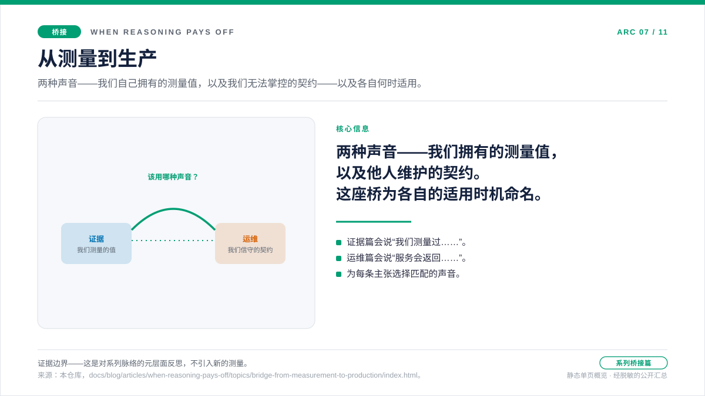

桥接文章 · 证据层与运维层之间
从测量到生产
读完五篇证据文章，你带走的是一种习惯，而不只是一个结论：不要因为“听起来更聪明”就先把推理强度调高——要把成本、质量、延迟和 token 形态放在一起读，只在真正划算的地方才多花那一个 token。这种习惯足以让你在基准测试里挑出一个 effort 档位，却还不足以支撑一个在线服务的运行。当你的选择撞上真实流量的那一刻，问题会悄悄换了形状：你不再问推理在基准测试里究竟是在哪里值回成本的？，而是开始问当请求会被限流、重试、缓存、溢出，并要按真实容量来规划时，我该如何让那个决定继续稳妥？这篇桥接文章讲的正是这次问题的转变——以及必须随之而来的那次“声音”的转变。

这座桥为何存在
五篇证据文章回答的都是同一类问题：一个推理 token 什么时候值得花？它们用唯一诚实的方式作答——测量一个工作负载，把成本对照质量、延迟和 token 形态一起读。可一旦你部署上线，这个决定就不再老老实实待着。同一个提示词如今会以生产规模一次次到来，与其他在线流量一起经过缓存逻辑，有时以 429 的形式返回，还要争抢预置的容量。基准测试敲定了 token 什么时候值得花；可一旦掌控条件的不再是你的测试框架，该怎么继续花，却还没有任何定论。
正是这道缝隙，构成了桥接页面存在的全部理由。它既不是又一次测量，也不是一份运维规范——它是两者之间的交接说明。证据层挣得了这个决定；运维层则必须在基准测试从未见过的条件下信守这个决定。把交接的话讲明白，才能让读者不把一项有文档记载的服务行为误当成“我们测量出来的”，也不把一个我们测量出来的数字误当成“平台承诺”的。职责不同、证据不同、声音也不同——本页接下来的内容，就是要把这两者区分清楚。
问题
证据层的习惯，什么时候需要变成运维层的习惯？又有哪些东西会在两者之间延续下来？
证据
证据层的五篇专题文章共享同一种形态。每篇都点名一个工作负载——短事实回答、多步推理、使用工具的代理、不可见的推理 token、以及建模得到的 PAYG 与 PTU 交叉点——并在一张小图上把成本、质量、延迟和 token 构成放在一起读。这种形态是有意为之：一根只说“成本上去了”的柱子，挨着一根说“质量没动”的对照柱时，不过是个脚注；一根越过评分标准的质量柱，挨着一根说“等待变长了”的对照延迟柱时，同样只是脚注。每篇都以一条即便绝对数字不再成立、也依然站得住的决策含义收尾。
结论
带进运维层的，是证据的习惯，而不是那些绝对数字。运维文章是写成叠在官方规范之上的策略，而不是基准测试。它们沿用同一套审计轨迹纪律——Tier 1 有文档记载的行为、Tier 2 运维推断、在界线落点处标明证据边界——再用它去回答基准测试里的单个配置无法独自回答的问题。
声音为何会变
证据文章说“我们测量过”。对于一次测量，这种声音是恰当的：它对结果负责，承担其中的噪声，也允许读者就样本提出质疑。运维文章说“Microsoft Learn 记录了这份契约，实用准则是这样的”。对于一份契约，这种声音才恰当：它指明出处，把“有保证的”与“推断出来的”区分开，让运维者不必等着重新跑一遍就能动手。
当答案来自我们自己拥有的测量时，基准测试的声音是合适的。当答案来自他人维护的契约、而我们正把它翻译成一份操作手册时，运维的声音才合适。把两者混在一起——对一项有文档记载的行为说“我们测量过”，或者对一条我们自己跑出来的、随推理强度变化的成本曲线说“Microsoft Learn 说”——会同时削弱这两半。这种区分是一项特性，而不是前后矛盾。
落到实处，它体现在三个地方：
- 时态。证据文章用过去式陈述发现（“minimal effort 平均每个请求 $0.000663”）。运维文章用现在式陈述契约行为（“服务会返回带
retry-after-ms头的 429”）。 - 来源。证据文章引用本仓库中的
analysis.json产物。运维文章引用带访问日期的 Microsoft Learn 页面，只有在文档没有说明时，才退回到仓库里的测量。 - 收尾句。证据文章以“我们学到了什么”或“运维者手册”收尾。运维文章以“实用准则”收尾。收尾的那句话，会告诉读者他们刚读到的是哪一类证据。
两层共享的东西
有三种习惯在桥上双向通行。
第一种是成对地读。基准测试层从不单看成本；它把成本挨着质量、延迟和 token 构成一起读。运维层也从不单看一个信号；它把 retry-after-ms 挨着那条负责这段等待的延迟策略一起读，把缓存命中率挨着首 token 延迟一起读，把 max_output_tokens 挨着准入并发数一起读。问题的形状变了，但同时盯着两样东西看的习惯没变。
第二种是证据边界。每篇基准测试文章都会说明测量覆盖了什么、又没覆盖什么——N = 20 个人工编写的样本、R = 3 次重复、公开的聚合结果、仅采用标价。每篇运维文章用另一套词汇说着同一件事——Tier 1 规范对 Tier 2 推断、公开清单对私有归档、带访问日期的引用对运维上的经验法则。把边界点出来，能让读者不至于把任何一类证据过度拔高成“保证”。
第三种是下一步该怎么走。每篇证据文章都会在结尾说明：如果工作负载的形状变了，下一个实验会是什么。每篇运维文章都会在结尾说明：下一次观测会告诉运维者什么。两种情况下，产出的都是一套决策框架，而不是一纸定论。
运维层里真正新增的东西
有三样东西出现在运维层，而证据层够不到它们。
出现了一份响应头契约。retry-after-ms、溢出相关的响应头，以及缓存的匹配条件，都不是测量值；它们是服务做出的承诺。基准测试里的单个配置无权就这份承诺是否正确投票。运维文章会仔细读这份承诺，并写清它承诺了什么、又没承诺什么。
出现了一个路由面。prompt_cache_key 不是一个元数据标签；它是与前缀哈希相结合的路由亲和性控制。缓存留存不是一种副作用；它是一项带数据驻留维度的、按请求做出的策略选择。这些都是运维形态的问题，只有当工作负载真正跑在某个部署上之后才会浮现。
出现了一次向容量规划的翻译。迁移容量规划那篇文章，把同一套测量习惯接回到预置吞吐量的规划上。那张图里的数字是示意性的——明确标注为一次计算，而不是一项容量结果——但它所用的纪律，正是基准测试文章训练出来的那套：测量可见的输出、测量隐藏的推理、测量缓存的输入、测量响应上限，然后才去规划部署的规模。
读完证据文章后，如何读运维文章
同一套阅读动作在两层都管用。先读元信息头——问题、证据、结论——判断这页问的是不是你此行想问的。读正文，去看机制和含义。读来源，去核对证据边界。只有当这条边界契合你的处境时，才把那个决定带向下一步。
在证据文章里，边界是“我们是在一个租户、一个区域、一份定价快照下，用 N = 20 个样本测出来的”。在运维文章里，边界是“这是 Microsoft Learn 截至访问日期所记录的内容，外加本仓库愿意为之背书的一小组运维推断”。边界不同，纪律相同。
来源 · 证据边界
来源与证据边界
这篇桥接文章不引入新的测量，也不引入新的规范引文。它陈述的是把两层连接起来的编辑契约。各篇链接文章内部所引用的来源，分别适用于桥的两侧。
- 证据侧引用：各篇的
analysis.json产物、运行时所采用的定价快照，以及docs/05-methodology.md中的方法论契约。 - 运维侧引用：带访问日期的 Microsoft Learn 产品文档、
docs/15-spec-vs-inference-taxonomy.md中“规范对推断”的分类体系，以及docs/16-release-tiers-and-redaction-policy.md中的发布层级定义。
实用准则
实用准则：证据层挣得了花一个 token 的权利；运维层挣得了在部署上线之后继续花它的权利。按这个顺序来读，并让每一层各自划定自己的证据边界。
下一篇： 429 是一种恢复信号，而不只是一个错误 —— 当 PTU 容量说“现在不行”时，客户端该如何决定下一步？